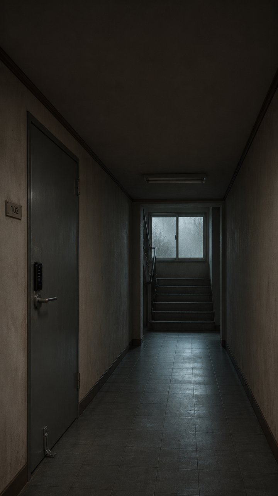
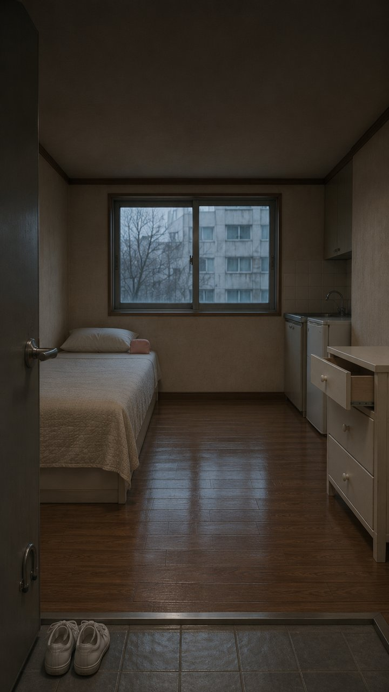

4개 채널 키프레임 제작 완료 검수판 ($0.00)
전 레포 장소 정본 · 캐릭터 시트 · 키프레임 생성 및 전 단계 무료 게이트 검증 100% 통과 (H3 유료 발주 직전 대기 중) · 시나리오·대본 검수판 보기 →
① 꼬미랑 서연이 — 《펴주면 꼭 다시 파는 꼬미》 (AUTO-261104-1056)
doctor · plan · places · plates · keyframes · scale · cameras · board · cuts_judge PASS ($0.00)
장소 정본 (living_cushion)낮 거실 바닥 · 방석 고정

C01 (0:00–0:03) KKOMI_CLOSE(무대사) 0초부터 두 앞발로 담요 파헤치기

C02 (0:03–0:06) PAIR_LEFT서연: “방금 예쁘게 펴줬잖아!”

C03 (0:06–0:09) PAIR_RIGHT꼬미: “내 자리잖아.”

C04 (0:09–0:12) PAIR_FRONT서연: “쭉 펴야 편하게 자지.”

C05 (0:12–0:15) PAIR_LEFT_LOW(무대사) 주름 위에 턱을 얹고 버티기

C06 (0:15–0:18) PAIR_RIGHT_MID서연: “누나가 다시 펴줄게.”

C07 (0:18–0:21) PAIR_FRONT_TIGHT꼬미: “누나가 잘 거야?”

C08 (0:21–0:24) PAIR_LEFT_END꼬미: “그럼 누나 취향대로 해.”
② 냥아치김동식 — 《털만 정리하자》 (AUTO-261104-1124)
gates · canon · kf C01~C06 · seams · cuts_council PASS ($0.00)
장소 정본 (living_room)낮 거실 러그 · 베이지 소파 앞

C01 (0:00–0:03.5)김동식: “그 빗 치워라. 안 빗는다.”

C02 (0:03.5–0:07.5)박준호: “등만 세 번 빗자, 금방 끝나.”

C03 (0:07.5–0:12.0)김동식: “세 번이 서른 번 되는 거 다 안다.”

C04 (0:12.0–0:16.0)박준호: “그럼 츄르 하나 까 줄게.”

C05 (0:16.0–0:20.0)김동식: “하나 갖고 등 전체를 밀겠다고?”

C06 (0:20.0–0:24.0)김동식: “두 개 가져와. 앞뒤로 나눠 빗자.”
③ 도윤이는 24개월 — 《약국에서 빨간 공룡 밴드를 처음 본 두 살》 (AUTO-261104-1515)
author · sheet · D0~D2.5 · D3_gate · D3 · D4 PASS ($0.00)
캐릭터 시트 (character-sheet_01)도윤 · 엄마 · 약사

C01 (0:00–0:04.5)약사: “귀여운 공룡 밴드네, 아야 한 데 붙이는 거야.” / 엄마: “도윤아, 가방에 넣자.”

C02 (0:04.5–0:09.0)도윤: “웅... 손가락 아야!” (멀쩡한 집게손가락 내밀기)

C03 (0:09.0–0:13.5)엄마: “방금까지 아무 데도 안 아팠잖아.”

C04 (0:13.5–0:18.0)도윤: “지금 아야 했어! 호 해줘!”
④ 다정한기척 — 《학생, 집에 있었네?》 (AUTO-261104-1515)
pack · sets · sheets · keyframes (17컷+암전1컷) · kf_mouth · lint PASS ($0.00)
세트 1 (studio_hallway)복도 · 302호 현관문

세트 2 (studio_room)원룸 내부 · 화장실 반투명 유리문

시트 1 (REAL_01)한수빈 (대학생 세입자)

시트 2 (REAL_02)박 중개사

시트 3 (REAL_03)침입자 남자

C01 (0:00–0:03)중개사: “학생 집은 빈집이라 오늘 방 좀 보여줬어.”

C02 (0:03–0:06)수빈: “오늘 내내 본가에 있었는데...”

C03 (0:06–0:08)(무언) 도어락의 낯선 손자국

C04 (0:08–0:11)중개사: “방 보러 온 손님하고 초인종부터 눌렀지.”

C05 (0:11–0:14)수빈: “아무도 없었잖아요.” / 중개사: “그래서 비밀번호 눌렀어.”

C06 (0:14–0:16)(무언) 현관 바닥의 낯선 검은 운동화 한 켤레

C07 (0:16–0:19)수빈: “제 신발 아닌데...” / 중개사: “방 안도 둘러봤어.”

C08 (0:19–0:22)중개사: “화장실 불만 켜져 있고 문은 잠겨 있더라고.”

C09 (0:22–0:25)수빈: “저 어제 불 다 끄고 나왔어요.”

C10 (0:25–0:28)중개사: “샤워하는 줄 알고 학생 집에 있었네 하고 나왔지.”

C11 (0:28–0:31)수빈: “사장님, 그때 집 안에 누구 있었어요?”

C12 (0:31–0:34)중개사: “응, 화장실 문 안에서 서서 우리 쪽 보고 있던데.”

C13 (0:34–0:36)(무언) 반투명 유리문 너머 검은 사람 그림자

C14 (0:36–0:39)수빈: “그럼 지금 제 방에 있는 건 누구예요?”

C16 (0:40.5–0:43) [C15 1.5초 암전 직후](무언) 세면대 옆에 숨어 문틈으로 내다보는 남자

C17 (0:43–0:45.5)(무언) 휴대폰 불빛 아래 떨리는 수빈의 눈동자

C18 (0:45.5–0:48)(무언) 잠금쇠가 돌아가며 열리는 화장실 문틈과 네 손가락